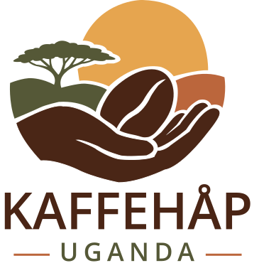

En start for Davies
Støtte til etablering av kaffeplanter, nødvendig oppfølging og ressurser i oppstartsfasen.
PILOTPROSJEKT
Støtt prosjektetFor oss handler Kaffehåp Uganda ikke om å gi mennesker en fremtid, men om å støtte dem i å skape sin egen.

01 — HISTORIEN

Møt Davies. En person med en idé, en ambisjon og viljen til å skape noe eget.
Kaffehåp Uganda ble til gjennom et ønske om å hjelpe Davies i gang med kaffeproduksjon. Ikke fordi initiativet mangler, men fordi etablering krever ressurser og investeringer.
Vi tror på løsninger som vokser nedenfra. Davies skal stå i sentrum for sin egen virksomhet, med mål om at erfaringene også kan komme flere i lokalsamfunnet til gode.
Se hvordan prosjektet er tenktVi gir ikke mennesker en fremtid.
Vi støtter dem i å skape sin egen.
02 — PROSJEKTET
Vi begynner med én pilot: Davies' egen kaffeproduksjon. På sikt er ambisjonen at erfaringene kan brukes til å støtte flere lokale initiativ.
Støtte til etablering av kaffeplanter, nødvendig oppfølging og ressurser i oppstartsfasen.
PILOTPROSJEKTMålet er at Davies skal kunne bygge opp virksomheten, utvikle kompetanse og skape en varig inntektsmulighet.
LANGSIKTIG UTVIKLINGPå sikt kan Davies bidra til å dele erfaringer og koordinere flere interesserte kaffeprodusenter lokalt.
FREMTIDIG AMBISJONDette er prosjektets planlagte utvikling, ikke resultater som allerede er oppnådd.
03 — SLIK FUNGERER DET
Gjennom en symbolsk planteadopsjon kan du være med å støtte etableringen av kaffeproduksjonen.

04 — BLI MED
Velg hvor mange kaffeplanter du ønsker å adoptere symbolsk. Bidraget går til prosjektets samlede formål – ikke til eierskap i en bestemt plante.
Symbolsk adopsjon er en frivillig gave, ikke investering eller kjøp. Den gir ingen eierskap, avkastning eller krav på kaffe. Betaling er foreløpig ikke aktiv på denne siden.
Nettsiden er en førsteversjon. Før vi åpner for gaver, må organisasjonens godkjente betalingsløsning kobles til.
Spør oss om støtte ↗TILLIT OG ÅPENHET
Vi ønsker å være tydelige på hva støtten går til, hvordan prosjektet utvikler seg, og hva som fortsatt ligger foran oss.
Støtten kan brukes til planter, stell, vanning, opplæring, agronomisk oppfølging og nødvendig prosjektgjennomføring.
I utkastet til givervilkår er det satt en øvre ramme på fem prosent av innsamlede midler til administrasjon.
Det er planlagt prosjektoppdateringer, en årlig utviklingsrapport og en økonomisk oversikt.
Opplysningene bygger på prosjektets dokumentutkast. Vedtatte vilkår og rapporter skal publiseres før ordinær innsamling åpner.